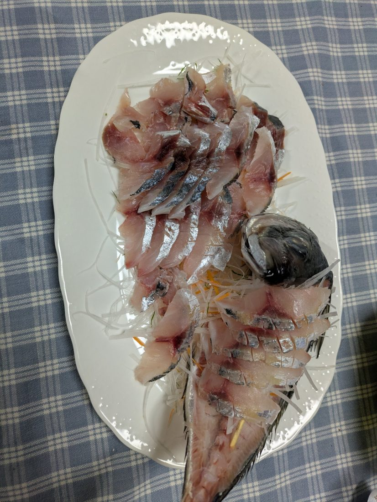

大きなアジの姿盛り

今日は、北海道ではあまり馴染みのないアジの刺身です。
北海道では珍しい、大きな脂のりのよいアジを魚勝で見つけたので、姿盛りにしました。
切り方のポイント。中から（身の厚みが）大型だったので、削ぎ切りにしました。魚の大きさに合わせた切り方で食べるのも良いですよ。

今日は、北海道ではあまり馴染みのないアジの刺身です。
北海道では珍しい、大きな脂のりのよいアジを魚勝で見つけたので、姿盛りにしました。
切り方のポイント。中から（身の厚みが）大型だったので、削ぎ切りにしました。魚の大きさに合わせた切り方で食べるのも良いですよ。